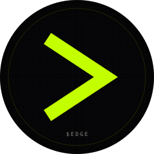
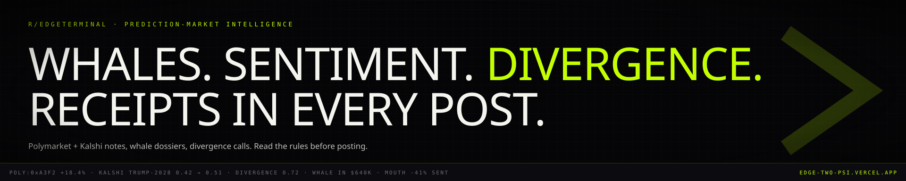

03.10 / Social Asset Pack · Reddit
r/EdgeTerminal.
Subreddit icon 256×256 (circle), banner 1920×384. Reddit values community-first language — the welcome post sets rules, the megathread slate is the conversion engine.
Subreddit Icon
03.10.01 · 256×256 · circle

256 × 256 · SVG
256 × 256 · circle render
Banner
03.10.02 · 1920×384

1920 × 384 · SVG
Sidebar / Description
03.10.03
community description
r/EdgeTerminal sidebar
**r/EdgeTerminal** — community for traders, researchers, and degens who take prediction markets seriously. We discuss Polymarket and Kalshi markets, surface whale activity, dissect divergence between price and sentiment, and keep a public picker track record. **Topics in scope:** • Polymarket / Kalshi market analysis (politics, macro, crypto, sports, geo) • Whale-flow observations (≥$25K entries) • Sentiment vs price divergence • Picker strategy + back-testing • Tooling, APIs, automation **Topics out of scope:** • Token shilling unrelated to $EDGE • Generic crypto pump posts • DMs claiming to be mods (we don't DM about access) • Speculation without receipts **Tools:** • Terminal: edge-two-psi.vercel.app • Token: $EDGE on Solana • Discord: discord.gg/edge
Pinned Welcome Post
03.10.04
pinned · rules + welcome
Welcome to r/EdgeTerminal — read this first
Welcome. r/EdgeTerminal is the discussion forum for the $EDGE terminal — a real-time aggregator and intelligence layer for Polymarket and Kalshi. This sub is for people who take prediction markets seriously: traders, researchers, election forecasters, sports-betting quants, anyone who's wired into the markets and wants a higher-signal room than the existing /r/PredictIt /r/PredictionMarkets crossover. ──────────────────────────────── ## WHAT WE DISCUSS ✓ Market analysis (Polymarket + Kalshi, all topics) ✓ Whale-flow observations ✓ Divergence between price and sentiment ✓ Picker strategy + back-tests ✓ Tooling, APIs, scrapers, automation ✓ The $EDGE terminal itself ✗ Token shilling that isn't $EDGE ✗ Generic crypto pump posts ✗ "Wen lambo" or rocket emojis ✗ Posts without receipts ## RULES 1. Receipts in every post. Link the market. Include a screenshot. Cite the wallet. 2. No DM scams. Mods will never DM about access, claims, or wallet verification. 3. No off-topic shilling. 4. The picker track record is immutable. 5. Mark resolved markets with [RESOLVED — YES/NO]. 6. Be civil. Disagree with the data, not the person. ## TOOLS – Terminal: edge-two-psi.vercel.app – Discord: discord.gg/edge – X: @edgeterminal – Token: $EDGE on Solana ## FOUNDERS – u/edgeterminal — an Trader (product, frontend) – u/edgeterminal — an Trader (data, infra) Brand-account flair on the moderator account. AMA on the last Friday of every month. Welcome aboard.
First 5 Megathreads
03.10.05
megathread · always-on
01 · Daily Discussion Thread
Drop: — Markets you're watching — Whales you spotted on the tape — Sentiment divergence you noticed — Questions about the terminal, the picker, the data (New thread auto-posted at 09:00 ET daily.)
megathread · weekly
02 · Picker Track Record
This week's calls from the public picker algorithm. Methodology: 1. The algo flags markets where divergence ≥0.15 AND whale flow ≥$25K in the same direction. 2. Entry is recorded at the moment of flag. No edits. 3. Resolution is the market's settled outcome. All historical picks publicly viewable at edge-two-psi.vercel.app/picker.
megathread · rolling
03 · Whale Spotting
Post wallets that have shown unusual size or accuracy. Format: > Wallet: > Venue: > Notable moves: > Hit rate observation: > What you think they know:
megathread · builder
04 · Data / Tooling / API
For anyone building on top of Polymarket / Kalshi / on-chain prediction-market data. Drop datasets, scrapers, notebooks, endpoint issues. We share what we use internally as we open-source pieces.
megathread · community ops
05 · Suggest a Market to Cover
The terminal's bot coverage is prioritized by community demand. Post markets you'd like full coverage on. Upvote others' requests. Top requests each week get added.
Setup Notes
03.10.06
Create
r/EdgeTerminal. Community type: Public. Topics: Finance, Crypto, Politics. Mark non-NSFW.Upload
pfp.svg (export 256×256 PNG) and banner.svg (export 1920×384 PNG).Paste sidebar copy. Configure rules from the welcome post into the official Rules system.
Post + pin the welcome thread. Post + pin the Daily Discussion (megathread #1). Schedule the auto-repost for 09:00 ET daily via AutoModerator.
Set up post flair: Market Analysis (lime), Whale Spotted (amber), Divergence (magenta — rare), Picker Call (green), Devlog (muted), Resolved (bone).
Require post flair via AutoModerator. Set the "no receipts → auto-remove" rule for posts that don't link a market or include a screenshot.
Cross-promote first via Discord announcement, not via blasting other crypto subs. Reddit detects shill velocity and shadow-bans.